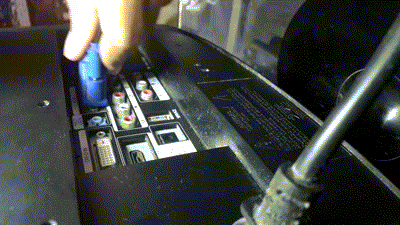

PocketSupport



Monitor Apresenta Defeito no RGB
Se o seu monitor não está funcionando corretamente estas podem ser as possíveis causas: Problema com solda fria na placa do monitor ou da placa de vídeo; problema nos pinos do cabo VGA ou nos fios internos.
1° Passo
Realize a substituição do cabo VGA
2° Passo
Se realizando a troca do cabo VGA, o problema persistir, substitua a placa de vídeo e caso continue o problema deverá ser realizada a troca do monitor.